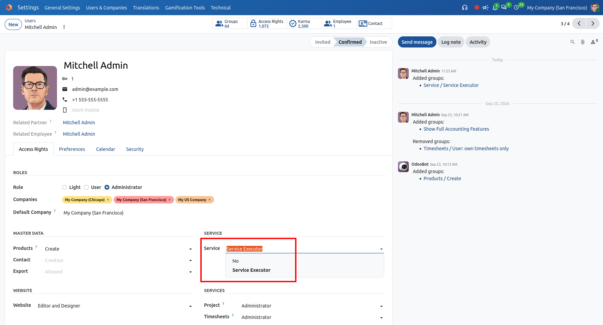
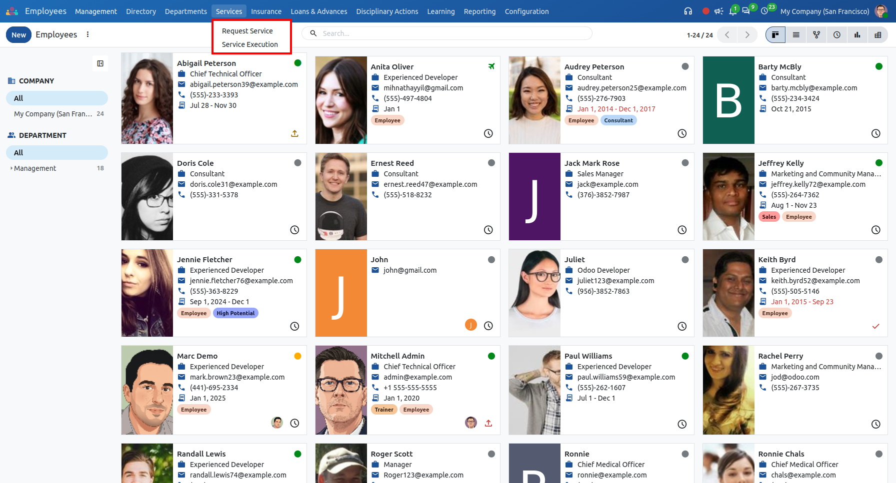
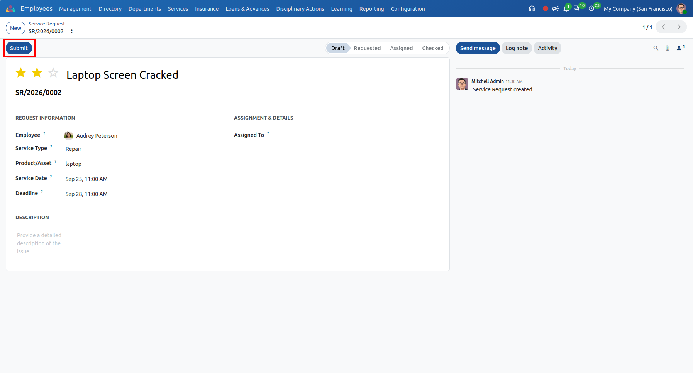
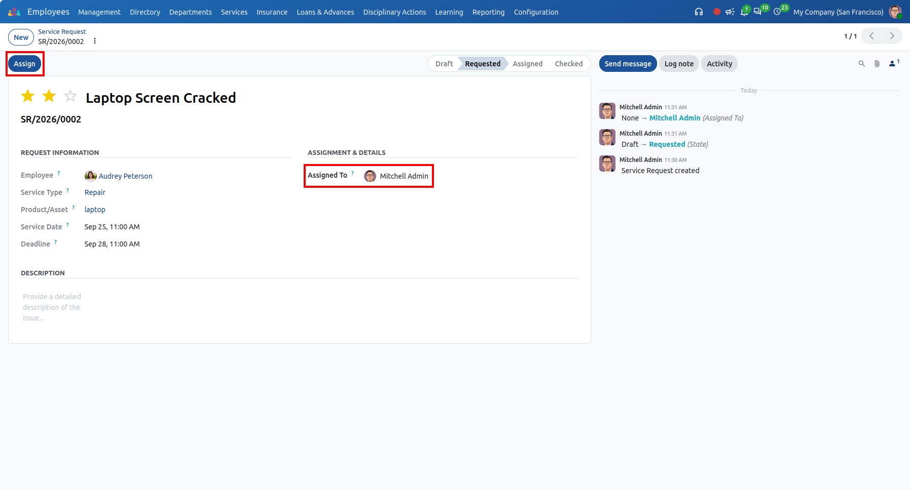
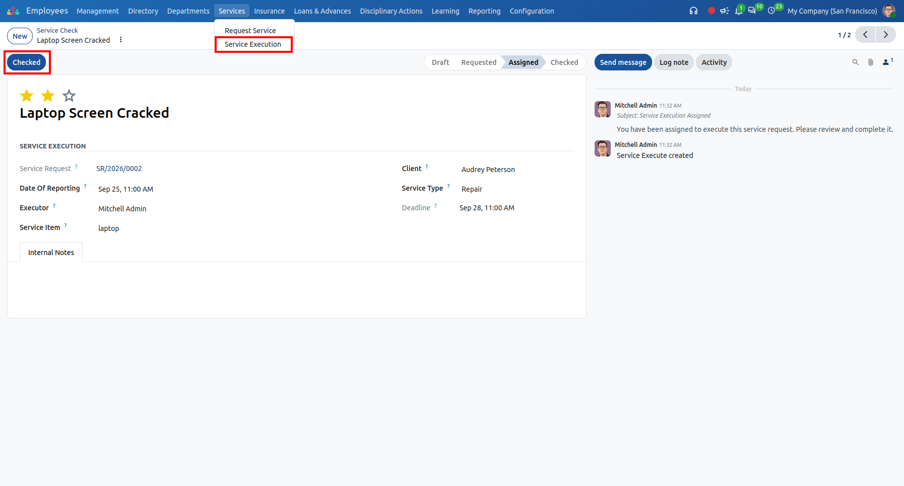
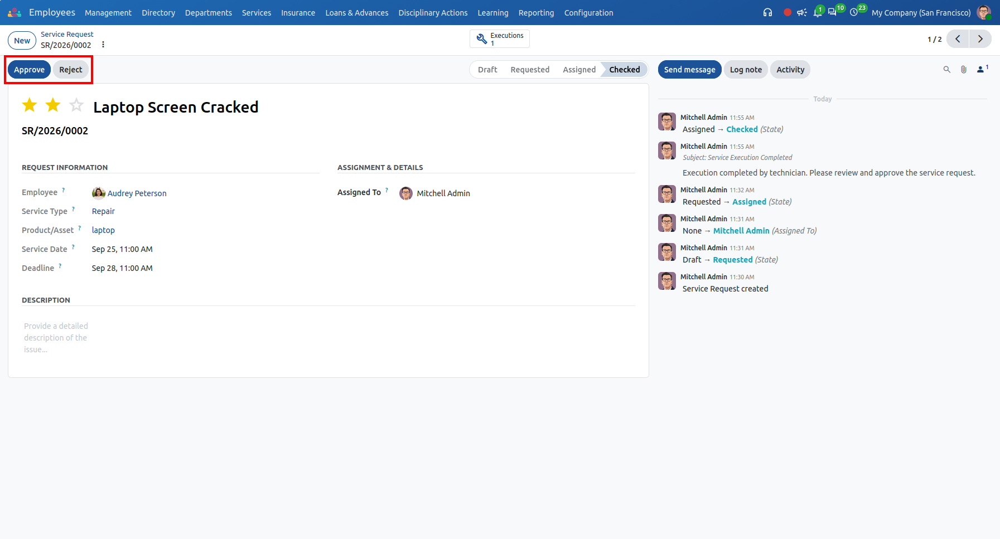

Open HRMS Service Request
A comprehensive technical and administrative service request management solution for Odoo 20. Empower employees to submit maintenance orders, assign dedicated service executors, track execution progress, and streamline manager approvals.
Key highlights
Accelerate workplace issue resolution with structured ticketing, technician assignment, and full managerial accountability.
End-to-End Service Lifecycle
Clear multi-stage progression from Draft and Requested through Assignment, Execution Verification (Checked), and Final Approval or Rejection.
Dedicated Service Executor Role
Specialized "Service Executor" security group enabling technicians to view assigned tasks, update execution records, and sign off with the "Checked" action.
Synchronized Service Executions
Assigning an executor instantly initializes a linked Service Execution record accessible via smart button, keeping requests and tasks in perfect sync.
Asset & Category Association
Categorize services under Repair, Replace, Updating, Checking, or Adjustment, and link maintenance directly to company hardware/inventory assets.
Automated Alerts & Chatter
Full audit trails with automated chatter messages dispatched to technicians upon task assignment and to managers upon completion.
Priority & Deadline Tracking
Set visual priority ratings (Normal, Low, High, Very High) and enforce target deadlines with dynamic red alert highlighting for overdue tasks.
Configure User Access Rights - Service Executor Role
Under Settings > Users & Companies > Users, assign the "Service Executor" security privilege to technicians or administrators. This role grants specialized access to the Service Execution workflow and task verification.

Centralized Services Navigation in Open HRMS
Inside the Employees module, the dedicated "Services" top-bar menu provides direct navigation to "Request Service" for creating and managing requests, and "Service Execution" for technicians to monitor their active assignments.

Service Request Creation & Instant Submission
Employees fill in the service subject, service category (e.g. Repair, Replace, Updating), product/asset item, service date, deadline, and priority. Clicking the "Submit" button submits the ticket for manager assignment.

Executor Assignment & Automatic Execution Record Generation
In the "Requested" stage, an authorized HR or service manager designates the technician under "Assigned To" and clicks "Assign". This transitions the ticket to "Assigned" and automatically generates a synchronized Service Execution record.

Service Execution & Technical Verification (Checked)
The assigned executor opens the task under Services > Service Execution, documents diagnostic observations in internal notes, finishes the maintenance work, and clicks "Checked" to complete execution and alert the manager.

Manager Final Review: Approval or Rejection
Once verified as "Checked", the manager reviews execution details, accesses execution records via the "Executions" smart button, reviews chatter logs, and clicks "Approve" to close the ticket or "Reject" if further action is required.

Multi-Stage Workflow Pipeline
Structured ticket progression across Draft, Requested, Assigned, Checked, Approved, and Rejected states.
Dedicated Service Executor Role
Specialized security group separating technician execution controls from HR managerial assignment rights.
Asset & Product Integration
Link requests directly to company products or hardware assets from your Odoo inventory catalog.
Configurable Service Categories
Pre-loaded with Repair, Replace, Updating, Checking, and Adjustment with full support for custom categories.
Smart Executions Stat Button
Direct stat counter button on service requests displaying the number of executions and opening related tasks.
Automated Technician Alerts
Automated email notifications and chatter postings sent to designated technicians upon task assignment.
Technician "Checked" Action
Assigned executors can sign off on finished maintenance directly from their execution view or request form.
Managerial Approval & Rejection
Rigorous oversight allowing managers to evaluate results and finalize with Approve or Reject buttons.
Visual Priority & Deadlines
Interactive priority stars (Normal to Very High) and dynamic red-highlighting for overdue requests.
Internal Technical Notes
Dedicated diagnostic remark tabs in execution forms for technicians to document findings and replacement parts.
Service Reporting & Pivot Analytics
Interactive Pivot analysis under HR Reporting to evaluate maintenance workload, response times, and volume.
Native Open HRMS Integration
Seamlessly cooperates with the Open HRMS ecosystem, employee directory, and department workflows.
Changelog & Version History
Continuous updates, performance optimizations, and official compatibility releases.
Initial commit for Open HRMS Service Request
Certified Odoo Implementation & Support
Related HR Modules
Need Customization or Migration Assistance?
Our certified team of 150+ Odoo professionals is ready to assist with deployment, service request customizations, and seamless enterprise migrations.